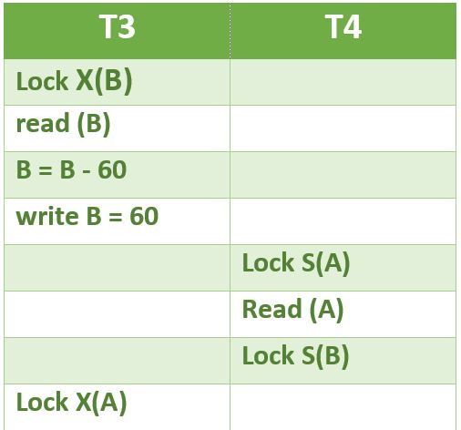
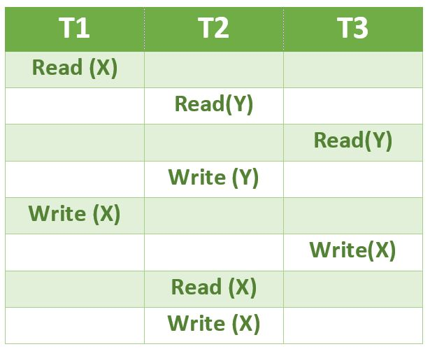

Following Questions have been asked in GATE CS 2010 exam.
1) A relational schema for a train reservation database is given below.
Passenger (pid, pname, age)
Reservation (pid, class, tid)
Table: Passenger pid pname age ----------------- 0 Sachin 65 1 Rahul 66 2 Sourav 67 3 Anil 69 Table : Reservation pid class tid --------------- 0 AC 8200 1 AC 8201 2 SC 8201 5 AC 8203 1 SC 8204 3 AC 8202
What pids are returned by the following SQL query for the above instance of the tables?
SLECT pid
FROM Reservation ,
WHERE class ‘AC’ AND
EXISTS (SELECT *
FROM Passenger
WHERE age > 65 AND
Passenger. pid = Reservation.pid)
(A) 1, 0
(B) 1, 2
(C) 1, 3
(S) 1, 5
Answer (C)
When a subquery uses values from outer query, the subquery is called correlated subquery. The correlated subquery is evaluated once for each row processed by the outer query.
The outer query selects 4 entries (with pids as 0, 1, 5, 3) from Reservation table. Out of these selected entries, the subquery returns Non-Null values only for 1 and 3.
2) Which of the following concurrency control protocols ensure both conflict serialzability and freedom from deadlock?
I. 2-phase locking
II. Time-stamp ordering
(A) I only
(B) II only
(C) Both I and II
(D) Neither I nor II
Answer (B)
2 Phase Locking (2PL) is a concurrency control method that guarantees serializability. The protocol utilizes locks, applied by a transaction to data, which may block (interpreted as signals to stop) other transactions from accessing the same data during the transaction’s life. 2PL may be lead to deadlocks that result from the mutual blocking of two or more transactions. See the following situation, neither T3 nor T4 can make progress.

Timestamp-based concurrency control algorithm is a non-lock concurrency control method. In Timestamp based method, deadlock cannot occur as no transaction ever waits.
3) Consider the following schedule for transactions T1, T2 and T3:

Which one of the schedules below is the correct serialization of the above?
(A)T1 →T3 →T2
(B)T2 →T1 →T3
(C)T2 →T3 → T1
(D)T3 →T1 →T2
{kind=link}
{kind=link}
Answer (A)
T1 can complete before T2 and T3 as there is no conflict between Write(X) of T1 and the operations in T2 and T3 which occur before Write(X) of T1 in the above diagram.
T3 should can complete before T2 as the Read(Y) of T3 doesn’t conflict with Read(Y) of T2. Similarly, Write(X) of T3 doesn’t conflict with Read(Y) and Write(Y) operations of T2.
Another way to solve this question is to create a dependency graph and topologically sort the dependency graph. After topologically sorting, we can see the sequence T1, T3, T2.
4) Which of the following functional dependencies hold for relations R(A, B, C) and S(B, D, E):
B → A,
A → C
The relation R contains 200 tuples and the rel ation S contains 100 tuples. What is the
maximum number of tuples possible in the natural join R◊◊S (R natural join S)
(A) 100
(B) 200
(D) 300
(D) 2000
Answer (A)
From the given set of functional dependencies, it can be observed that B is a candidate key of R. So all 200 values of B must be unique in R. There is no functional dependency given for S. To get the maximum number of tuples in output, there can be two possibilities for S.
1) All 100 values of B in S are same and there is an entry in R that matches with this value. In this case, we get 100 tuples in output.
2) All 100 values of B in S are different and these values are present in R also. In this case also, we get 100 tuples.
Please see GATE Corner for all previous year paper/solutions/explanations, syllabus, important dates, notes, etc.